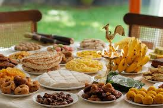
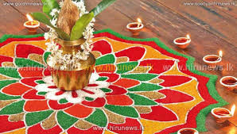
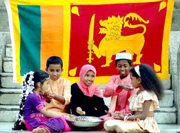
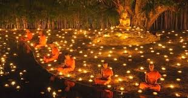
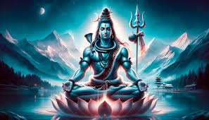

Sri Lanka has many festivals that celebrate the country's rich culture, traditions, and religious beliefs. These festivals often feature music, dance, colorful processions, and more. Some of the most popular festivals in Sri Lanka include:
Sinhala and tamil new year:
Also known as Puthandu or Aluth Awurudu, this festival marks the end of the harvest season.

Thai pongal:
A harvest festival celebrated by the Tamil community in Sri Lanka. It's a time to give thanks to the sun, rain, and farm animals that helped with the harvest.

National day:
Celebrated on 4 February every year, Sri Lanka's National Day celebrates the country's independence from the British Empire. The whole country celebrates

Vesak poya day:
A prominent Buddhist festival that commemorates the birth, enlightenment, and nirvana of Buddha. Celebrations include colorful lanterns called Vesak kudu, and lit-up pandals.

Maha shivaratri:
A major festival for devotees of Lord Shiva, where they gather in temples to perform rituals
